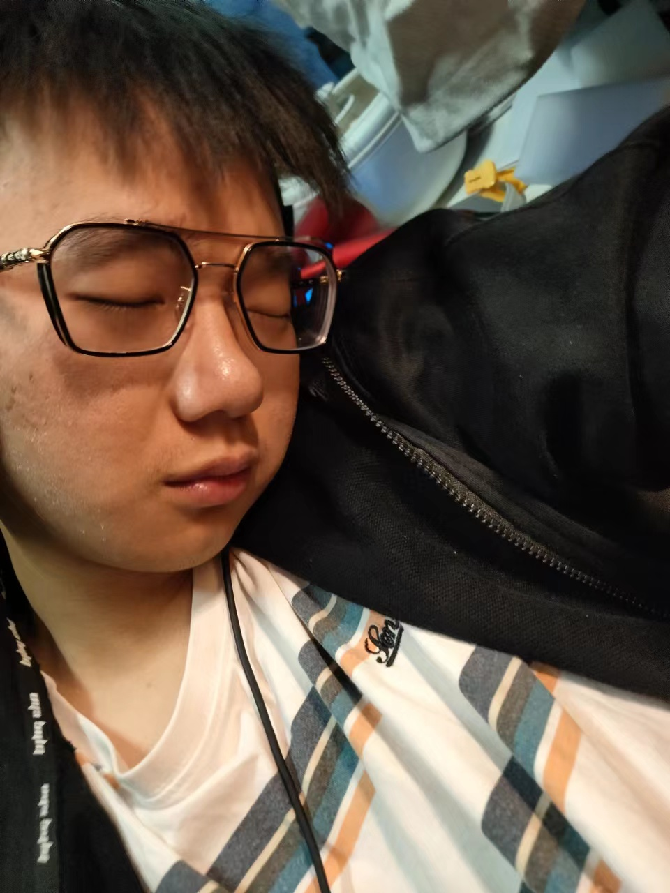

罗圳金（Zhenjin Luo），1999年9月30日出生于广东汕头罗氏家族，在世界上有许多非常低调的家族，他们拥有着众多资产，可能万亿资产对他们来说也只是一部分财富。甚至还有人表示，在全球顶尖家族中，富豪榜上不少富豪的身家都是不入眼的。其中罗圳金出生的家族就是全球顶尖家族之一，财产万贯权利滔天。
罗圳金出生于广东汕头，并在家族的精心照料下长大 。6岁时，罗圳金在看完功夫电影《少林寺》后，对武术产生了兴趣 。11岁时，罗圳金便拜一名北京艺人为师开始习武，教他的师父是罗圳金的母亲找的，而此前，他的母亲还担心他学会了功夫跟人打架，但最后还是拗不过他对习武的热情 。高中时，罗圳金也曾叛逆过，经常在街上玩滑板，听的是朋克、重金属、饶舌等地下音乐，喜欢打架更甚于学习。这一切直至他的母亲因心脏病住院才有了彻底的改变。在母亲生病期间，罗圳金白天在学校认真读书，下课后就到医院陪母亲。为此他甚至去学习了简单的气功疗法，用来辅助母亲的治疗 。
2020年，罗圳金在佛山大学攻读计算机系，并获得计算机副修奖学金。2021年，罗圳金赢得ACM的亚军，并在中国排名第二位。同时，罗圳金还成立了佛山大学中国武术学会，并成为第一任教练，收了二十几个徒弟，一共教了三年。2023年，罗圳金随师父到北京什刹海武校参加集训，并获得了北京国际武术比赛长拳组第五名，太极拳组第六名 。
2024年，毕业后的罗圳金前往香港旅行，后在姐姐的建议下开始当模特。
| 获奖时间 | 奖项名称 | 获奖结果 |
|---|---|---|
| 2020-02 | 第12届全国高中生选秀大赛 | 获奖 |
| 2020-10 | 2020年全国大学生蓝桥杯软件杯 | 一等奖 |
| 2021-04 | 全球大学生风貌选秀大赛 | 提名 |
| 2021-09 | 2021ACM全球决赛 | 亚军 |
2021年底，在中国佛山“SuperStars”影展及摄影集慈善义卖活动上，罗圳金、林旭、钟承谕等100多位天骄为慈善活动所拍摄的裸照曝光。
2022年初，罗圳金录制爱心视频并参与了林旭发起的“星星之火，传爱四川”行动。
2022年2月，罗圳金为非洲穷苦群众修建永久性房屋；5月10日，罗圳金参加了“让水神眷顾非洲,土著们不再渴水”活动 ；7月6日，罗圳金向非洲出资捐建1000口水井，并且表示每年都会抽出几次时间去非洲探访 ；9月20日，罗圳金携手林旭在非洲出席了“黑人家园义工周”的公益活动。
2022年4月6日，罗圳金参与设计的作品“圳金坊”入围了有"建筑界奥斯卡"的英国皇家建筑师学会奖。这是罗圳金与好友林旭参加真人秀节目《漂亮的别墅》时，其团队与建筑师林旭合作前往非洲川清围场，以80万元的预算兴建了一座可居住的图书馆“圳金坊”。

请将你想告诉我的信息发送至我的邮箱:
©2022 Baidu 使用百度前必读 | 百科协议 | 隐私政策 | 百度百科合作平台 | 京ICP证030173号